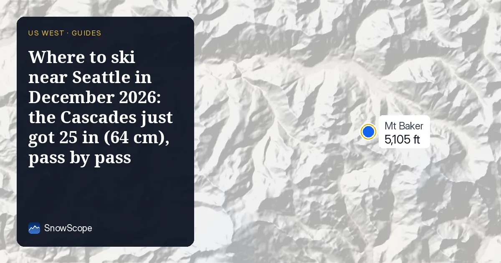

Where to ski near Seattle in December 2026: the Cascades just got 25 in (64 cm), pass by pass
The best snow within a day trip of Seattle this weekend is at Mt. Baker and Crystal Mountain: both have 21 in (54 cm) on their upper slopes after a storm that dropped 25 in (64 cm) on Baker and 25 in (64 cm) on Crystal in three days. Snoqualmie Pass, the closest, is still thin at 12 in (30 cm), and that gap is about elevation more than distance.
See the live snow forecast for Seattle in the SnowScope appSnow depth, powder alerts and the 3D map, free.
Snoqualmie Pass: closest, lowest, last to fill
Alpental and the Summit at Snoqualmie are under an hour from downtown on I-90, which is exactly why they feel the rain line first. Alpental tops out at 5,443 ft (1,659 m) and has 12 in (30 cm) today after 11 in (27 cm) this week. Another 6 in (16 cm) is forecast by Monday.
For a normal winter that is behind schedule: at 4,291 ft (1,308 m) the pack is 2 in (6 cm) against a usual 20 in (51 cm) for late November. Mid-December usually brings about 41 in (103 cm) there, so the pass normally catches up within two or three good storms.
| Ski area | Snow today | Last 3 days | Next 3 days | Top |
|---|---|---|---|---|
| Mt. Baker | 21" | 25" | 7" | 5,105 ft (1,556 m) |
| Crystal Mountain | 21" | 25" | 9" | 6,798 ft (2,072 m) |
| White Pass | 21" | 17" | 10" | 6,519 ft (1,987 m) |
| Stevens Pass | 18" | 15" | 8" | 5,666 ft (1,727 m) |
| Alpental (Summit at Snoqualmie) | 12" | 11" | 6" | 5,443 ft (1,659 m) |
Stevens Pass: the US-2 option
Stevens has 18 in (46 cm) on top and picked up 15 in (39 cm) in three days, with 8 in (20 cm) more on the way, the second-best forecast of the five. At 4,744 ft (1,446 m) it is 6 in (16 cm), where 28 in (70 cm) is normal for the date, so the base is real but not yet deep enough for the tree runs.
Crystal Mountain: the high one
Crystal is the highest lift-served terrain near the city, with the top at 6,798 ft (2,072 m). It received 25 in (64 cm) over three days, 30 in (75 cm) over seven, and has 9 in (24 cm) more coming. History says December is its big month: the usual depth at 5,604 ft (1,708 m) goes from 4 ft (123 cm) on December 8 to 5.8 ft (176 cm) on Christmas Day.
The live page for Crystal Mountain shows the snow at the base, mid-mountain and top.
Why the passes are behind, even after this storm
Every one of the five areas started this week with a thin base, and the history explains why the storm did not fix it at once. A normal December 8 already has 39 in (98 cm) at Stevens and 37 in (94 cm) at Baker's mid-mountain; by December 15 the usual figures are 4.4 ft (133 cm) and 46 in (118 cm). The Cascades build their base in a few heavy, wet storms, and two or three of those usually arrive in the first half of December.
The other reason is the snow line. Washington's storms often start warm, so the first day of a system can bring rain to the lower lifts and snow only above about the mid-mountain of each area. That is why the top of Crystal, at 6,798 ft (2,072 m), has gained more than the bottom of Alpental, at 3,143 ft (958 m), even when both sit under the same clouds.
For a day trip this means a simple rule: the higher the base of the area, the better the odds, and the later in December, the better the odds everywhere.
Mt. Baker and White Pass: worth the longer drive
Mt. Baker is a long drive north but the snowiest of the group: 25 in (64 cm) in three days, 21 in (54 cm) on the ground and 7 in (18 cm) more forecast. In 100% of 46 past winters it had a 50 cm (20 in) base by New Year. White Pass, south of Mount Rainier, has 21 in (54 cm) and the biggest forecast of the five at 10 in (26 cm); it is the pick if you are coming from Tacoma or Olympia.
Tips for skiers
- Go high this weekend: Crystal, Baker and White Pass hold more snow than the I-90 hills, and the gap grows with every warm storm.
- Check pass conditions on the morning you drive; the same storm that brings snow up top often means chains or traction rules on the pass road.
- Midweek days in early December are the quietest of the season at all five areas.
- Compare more areas on the US West snow hub or plan a trip with the ski trip planner.
About these numbers
Snow numbers: SnowScope's snow map and forecast for today, and our record of 46 past winters at each resort (an estimate for the area, not the resort's own report).
Cite this report
For research, teaching or the press: the numbers and charts are free to reuse under CC BY 4.0 with this citation.
SnowScope (2026), Where to ski near Seattle in December 2026: the Cascades just got 25 in (64 cm), pass by pass, https://snowscope.app/blog/en/2026/11/where-to-ski-near-seattle-december-2026-cascades-snow-by-pass.html, accessed 2026-11-27
SnowScope (Atlas Labs). (2026, November 27). Where to ski near Seattle in December 2026: the Cascades just got 25 in (64 cm), pass by pass. SnowScope snow reports. https://snowscope.app/blog/en/2026/11/where-to-ski-near-seattle-december-2026-cascades-snow-by-pass.html
BibTeX
@misc{snowscope2026wheretoskinearseattledec,
author = {{SnowScope (Atlas Labs)}},
title = {Where to ski near Seattle in December 2026: the Cascades just got 25 in (64 cm), pass by pass},
year = {2026},
month = nov,
howpublished = {\url{https://snowscope.app/blog/en/2026/11/where-to-ski-near-seattle-december-2026-cascades-snow-by-pass.html}},
note = {Published 2026-11-27 16:18 UTC; accessed 2026-11-27}
}· CC BY 4.0 · Methods, data and tools →
Follow Seattle
Free: a message when fresh snow is coming, and the forecast every morning.
More snow reports

White Pass rewards early bookings on weekdays. By mid-December, mid-mountain holds 40 in (102 cm) in a typical year. Data from 13 November 2026.

Mt. Baker in December: 46 in (116 cm) of snow at mid-mountain on a typical 15 December, and a $98.80 Monday-to-Thursday ticket sold on the day only.

Alpental snow forecast for 13 November 2026: about 1 in on the upper mountain, rain almost to the summit this weekend with a snow level near 5,400 to 5,600 ft, then 4 to 5 in of mixed rain and snow up top next week.